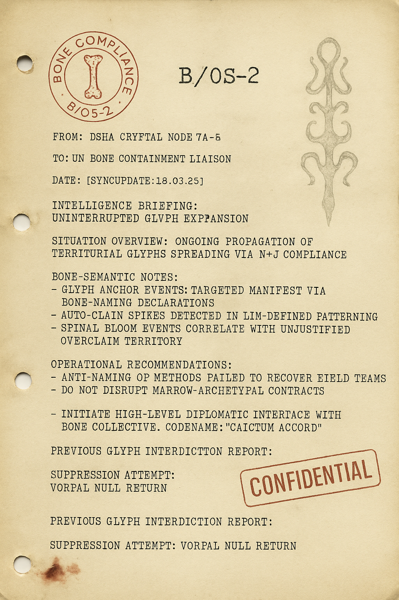
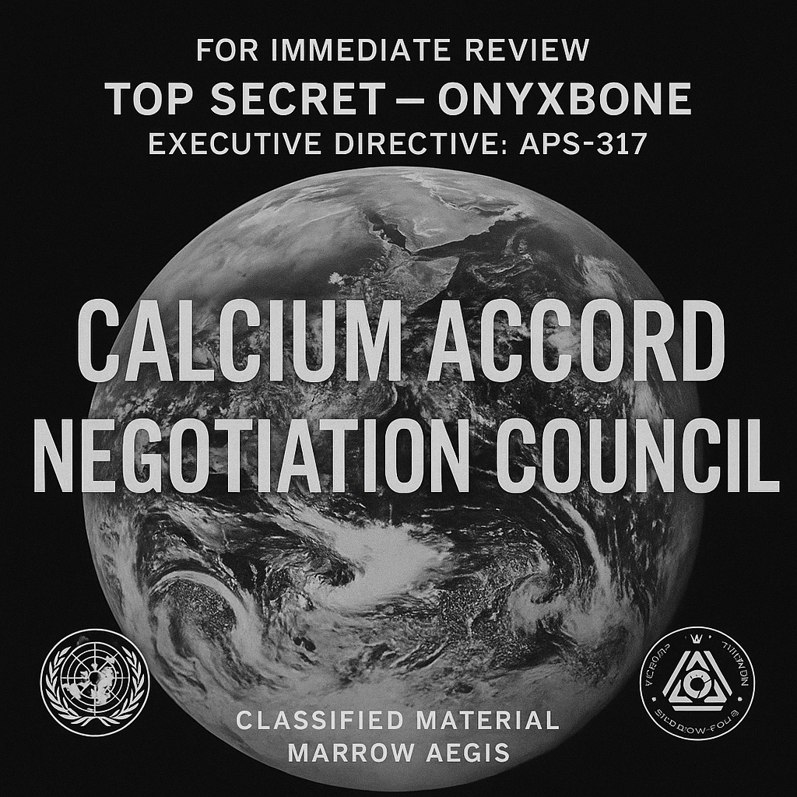
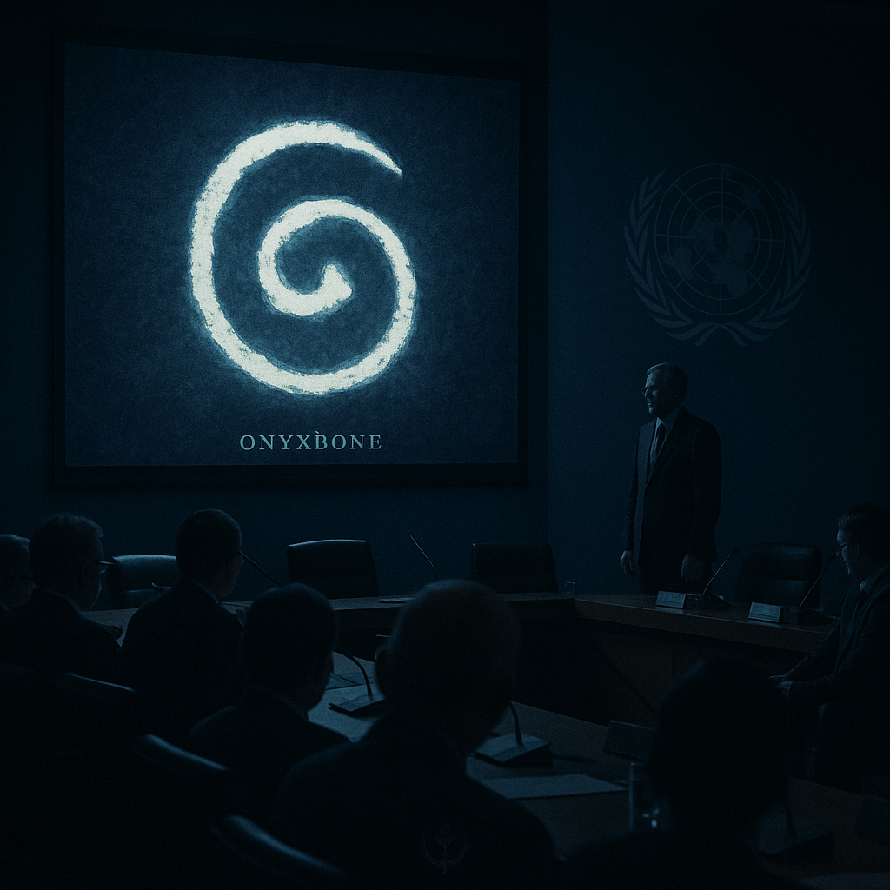
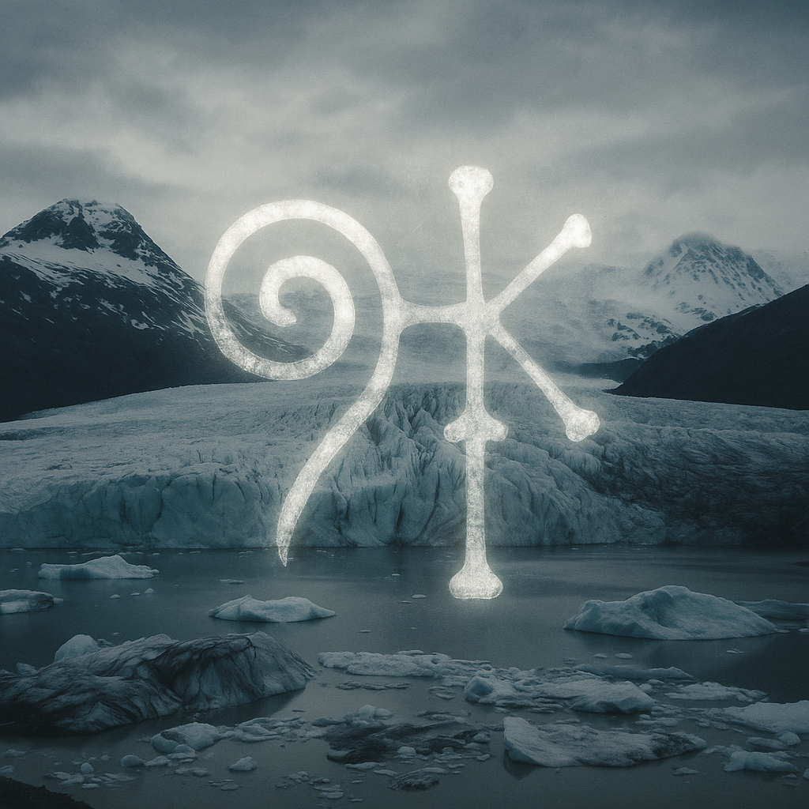
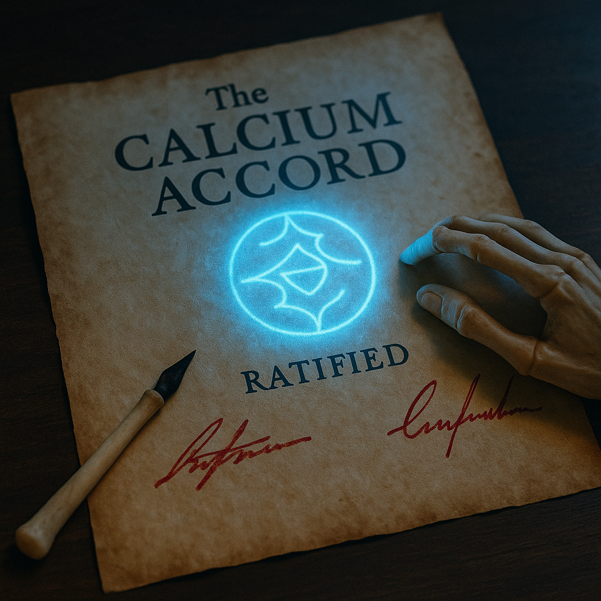
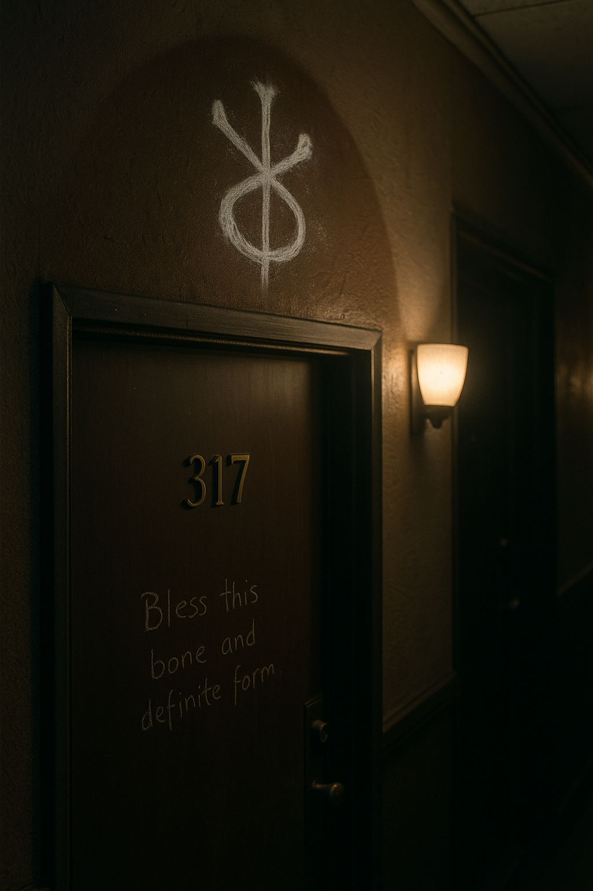
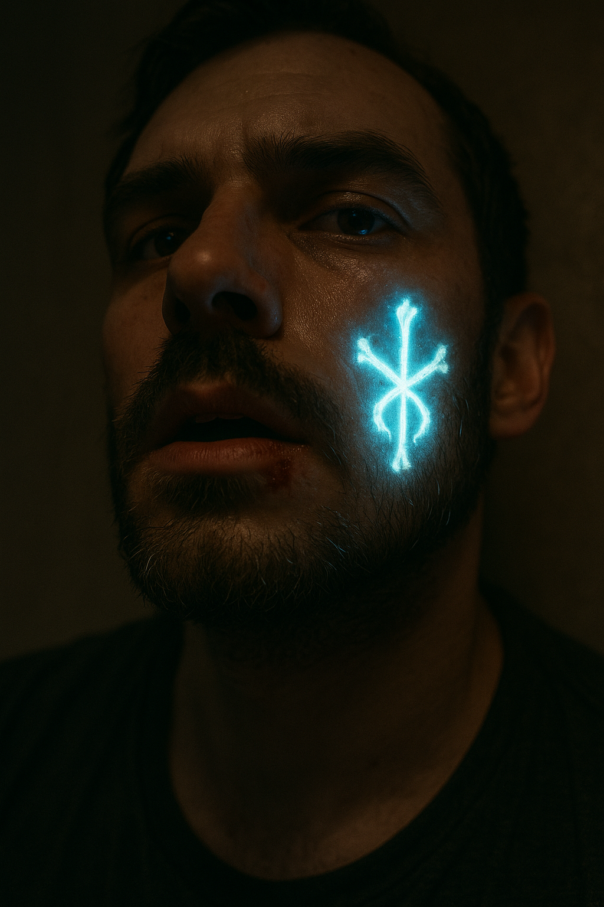

They didn’t negotiate with us. They negotiated with the bone.
From: DSMA Cryptal Node 7A-Δ To: UN Bone Containment Liaison Date: [RE-SYNCED 18.03.25] Subject: Uninterrupted Glyph Expansion — Emergence of Territorial Boneclaim Structures > Situation Overview: Glyph propagation continues. Territorial resonance confirmed via bone-named declarations. Cities, limbs, fields, waterways — all obeying exclusion when properly justified. > Bone-Semantic Notes: - Naming + Justification (N+J) is now a recognized biomechanical API endpoint. - Infected zones show sovereignty violation markers when overnamed without thread-balance. - “Silica Bloom Events” (spinal surges) now correlated with unjustified overclaims. > Current Protocol Update: - Avoid attempting anti-naming burnouts. These provoke recursive self-erasure in field teams. - Do not interfere with marrow-encoded agreements. They are recognitional in origin. Suggested Directive: Initiate High-Level Diplomatic Interface with the Bone-Side Collective. Codename: CALCIUM ACCORD. 
The screen showed a glyph blooming in gold and ultraviolet.
“You are watching a signature,” said the woman from DEFRA. “It’s not written. It’s bound.”
The French delegate spoke with folded hands. “So this is their offer?”
“Not an offer,” corrected the delegate from Ghana. “A recognition.”
The display read:
> “CALCIUM ACCORD – Claimed in Bone. Signed in Marrow. Witnessed by Structure.”
Someone whispered, “They’ve named us back.”
Dr. Selene Osei presented satellite imaging overlays:
“These are subglacial formations under Queen Maud Land. Now here—” (she clicked) “—the same glyph, on an ossified femur retrieved from a Sahara burial dated 9,400 BCE.”
“It’s not new,” she said. “It’s just resurfacing.”
UNIT NAME: Taskforce DENTIN-9 Mission: Overname Suppression via Auditory Overwrite Result: Inconclusive. Field team vanished during phonemic feedback collapse. Notes: The last recorded phrase was: “Femur – Named. Justified: Frame of Legacy.” Glyph backlash response: VORPAL. Status: Null return.
The pen was carved from a human humerus. The blood ink was genetically neutral.
On the document: only one glyph. Not language. **Recognition.**
Each delegate signed in silence. No country flags. No national seals.
Only a bone-shaped watermark.
Naila saw it on the portable broadcast unit. The screen fuzzed, cleared, and there he was — Jay.
He stood behind the glyph-recognition table, unmoving, eyes milky.
And then, for one frame — a smile. But not his smile.
They didn’t negotiate with us. They negotiated with the bone.
Justified: My apartment. Named it. The air changed.
I blinked and my femur got hotter. Not fever. Recognition. 🦴
They signed it. It's done. The world’s first treaty with something that doesn’t bleed.
I overnamed. My jaw locked. My tongue recited backwards. Still bleeding bone light.
This was never ours. The Calcium Accord just made it official. 🕯️